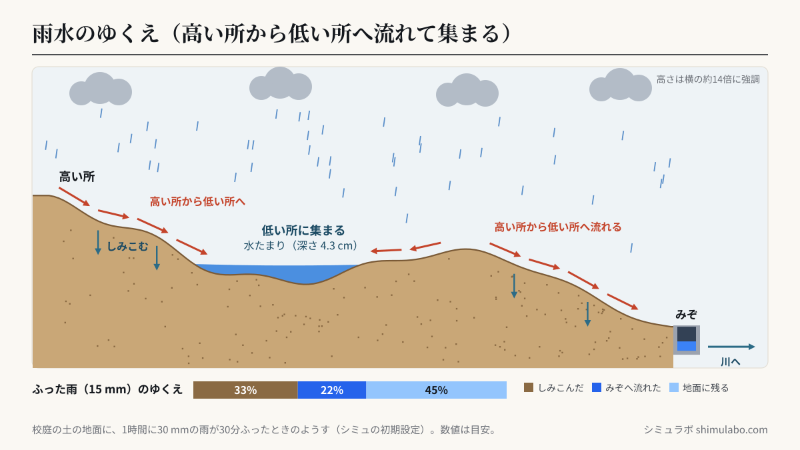
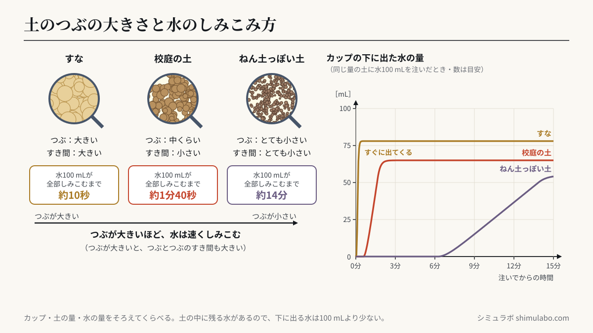

このシミュレーションでわかること
地面にふった雨水は、高い所から低い所へと流れて、低い所に集まります。だから、地面のへこんだ所に水たまりができます。また、水のしみこみ方は、土のつぶの大きさによってちがいます。つぶが大きいすなは水がすぐにしみこみ、つぶが小さい土ほど、しみこむのに時間がかかります。①では校庭の地面の高さを指でなぞって変え、雨の流れ方と水たまりのでき方を、②では、すな・校庭の土・ねん土っぽい土に同じ量の水を注いで、しみこむ速さを比べられます。
授業での使い方
導入：雨のあとの校庭を思い出す
雨のあとの校庭の写真を見せて、「水たまりができている所と、できていない所があるのはなぜだろう」と問いかけます。①の「地面の形」を「校庭の例」にして雨をふらせ、水がどちらへ流れ、どこに集まるかを予想してから確かめます。
展開：地面のかたむきと水の流れを調べる
地面を指でなぞってへこみをつくると、まわりの水がそこへ流れこんで、水たまりができます。「まっすぐなかたむき」では水たまりができずに全部みぞへ流れること、「まん中が低い」では、まん中に水が集まることを確かめます。校庭では、トレーに入れた水やビー玉で地面のかたむきを調べる活動とつなげられます（雨の日の校庭での観察は、天気の急な変化や雷に気をつけます）。
まとめ：土のつぶの大きさとしみこみ方
②で、すな・校庭の土・ねん土っぽい土に水を同時に注ぎ、下に出てくる水の量をグラフで比べます。虫めがねで見たつぶの大きさと結びつけ、「つぶが大きいほど、水が速くしみこむ」ことをまとめます。最後に①の「地面の土」を「アスファルト」に変えて、しみこまない地面では雨水がみぞから川へ一度に流れることを確かめ、大雨へのそなえにつなげます。
児童への問いの例
- 雨水は、地面のどちらの方向へ流れていくだろう？水たまりができるのは、どんな所だろう？
- すな場には水たまりができにくいのに、校庭にはできやすいのはなぜだろう？
- 町の中で、雨水を流したり、しみこませたりするために、どんなくふうがされているだろう？
しくみ・解説






図はタップすると大きく表示されます。授業のプリント・スライド・板書計画に自由に使えます（出典「シミュラボ」とページのURLを添えてください）。
言葉の意味（1文で）
- 雨水のゆくえとは、地面にふった雨水が、流れたり、しみこんだりして、どこへ行くかということです。
- 地面のかたむきとは、地面の高さのちがいのことで、水は高い所から低い所へ流れます。
- 水たまりとは、まわりより低い所に雨水が集まって、しみこまずに残ったものです。
- しみこむとは、水が土のつぶとつぶのすき間を通って、地面の中へ入っていくことです。
- つぶの大きさによって、つぶとつぶのすき間の大きさが変わるので、水のしみこみやすさが変わります。
土のつぶの大きさとしみこみ方（早見表・数値は目安）
| 土 | つぶの大きさ | しみこむ速さ | 100 mLが全部しみこむまで | 最後に下に出る水 |
|---|---|---|---|---|
| すな（すな場のすな） | 大きい（約0.06〜2 mm） | 速い | 約10秒 | 約78 mL |
| 校庭の土 | 中くらい（すなと細かいつぶがまざる） | ややおそい | 約1分40秒 | 約65 mL |
| ねん土っぽい土 | とても小さい（0.06 mmより小さいつぶが多い） | とてもおそい | 約14分 | 約55 mL |
カップに同じ量の土を入れ、水100 mLを同時に注いだときの目安です。土のつまり方やかわき方、カップの大きさで時間は大きく変わるので、実際の実験では「どれが速いか」の順番に注目しましょう。注いだ水の一部は土の中にたくわえられるので、下に出てくる水は100 mLより少なくなります。
なぜ、つぶが大きいと速くしみこむの？
つぶが大きいと、つぶとつぶの間のすき間も大きくなり、水が通りやすくなります。つぶが小さいと、すき間がとても小さくなり、水が通りにくくなります。すな場にすなが使われているのは、雨のあとでも水たまりができにくく、早く使えるようにするためでもあります。
雨の強さ（1時間にふる雨の量）
| 1時間の雨の量 | 気象庁のよび方 | ようす |
|---|---|---|
| 10〜20 mm | やや強い雨 | ザーザーとふる |
| 20〜30 mm | 強い雨 | どしゃぶり |
| 30〜50 mm | はげしい雨 | バケツをひっくり返したようにふる |
| 50〜80 mm | ひじょうにはげしい雨 | たきのようにふる |
| 80 mm以上 | もうれつな雨 | 息苦しくなるような圧迫感がある |
雨の量は、ふった雨がどこへも流れずにたまったときの深さ（mm）で表します。「1時間に30 mm」の雨が15分ふると、ふった雨は7.5 mmです。シミュレーターの「ふった雨のゆくえ」では、ふった雨のうち、しみこんだ水・みぞへ流れた水・地面に残っている水の割合がわかります。
雨水と大雨へのそなえ
町の中は、アスファルトやコンクリートの地面が多く、雨水がほとんどしみこみません。しみこまなかった雨水は、道のはしのみぞや下水を通って川へ流れていきます。短い時間に強い雨がふると、みぞや川に水が一度に集まって、あふれたり、低い土地が水につかったりすることがあります。そのため、雨水をためる池（調整池）をつくったり、水がしみこむ道（すき間の多い舗装）を使ったりするくふうがされています。また、校庭には、水はけをよくするためのかたむきやみぞがつくられています。
このシミュレーションで単純化していること
- ①は地面を横から切った断面（1本の線の上）だけで計算しています。実際の校庭では、水は前後左右の低い方へ流れます。
- ①の図は、高さを横の約14倍に強調してかいています。実際のかたむきは、目で見てもわからないくらい小さいことが多いです。
- 土にしみこんだ水が、地面の中でどう動くかは表していません。しみこむ力は、雨がふり続いても変わらないものとしています。
- ②の数値は目安です。土のつまり方・かわき方・量によって、実際の時間は何倍も変わります。
参考
- 文部科学省「小学校学習指導要領（平成29年告示）解説 理科編」第4学年 B（3）雨水の行方と地面の様子（小学校学習指導要領・解説）
- 気象庁「雨の強さと降り方」（気象庁 予報用語）
- 小学校理科の教科書（第4学年「雨水のゆくえと地面のようす」の単元）
引用・転載について
本ページのシミュレーション結果・数値は、出典を明記いただければブログ・ニュース記事・SNS・授業や社内資料への引用を歓迎します。事前連絡は不要です。
出典：シミュラボ「雨水のゆくえと地面のようすシミュレーター（水の流れ方・しみこみ方）」 https://shimulabo.com/sims/amamizu-yukue/よくある質問
- 雨水はどのように流れますか？
- 雨水は、高い所から低い所へと流れて、低い所に集まります。だから、地面のへこんだ所に水たまりができます。水の流れる向きを見ると、地面のかたむきがわかります。
- 水のしみこみ方は、土によってどうちがいますか？
- 土のつぶの大きさによってちがいます。つぶが大きいすなは水が速くしみこみ、つぶが小さい土ほど、しみこむのに時間がかかります。
- つぶが大きいと、なぜ水が速くしみこむのですか？
- つぶが大きいと、つぶとつぶの間のすき間も大きくなり、水が通りやすいからです。つぶが小さいと、すき間が小さくなり、水が通りにくくなります。
- すな場に水たまりができにくいのはなぜですか？
- すな場のすなは、校庭の土よりつぶが大きく、雨水がすぐに地面の中へしみこむからです。校庭の土はつぶが小さく、ふみかためられているので、しみこみにくく、水たまりができやすくなります。
- しみこみ方を比べる実験で、そろえる条件は何ですか？
- カップの大きさ、入れる土の量、注ぐ水の量、注ぎ方をそろえます。変えるのは土の種類（つぶの大きさ）だけにして、水が全部しみこむまでの時間や、下に出てきた水の量を比べます。
- 雨水のゆくえは、大雨の災害とどう関係がありますか？
- アスファルトなど水がしみこまない地面では、雨水がみぞや下水から川へ一度に流れこみます。強い雨が短い時間にふると、みぞや川があふれたり、低い土地が水につかったりすることがあります。そのため、雨水をためる池や水がしみこむ道などのくふうがされています。